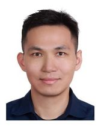

- Yun-Chien Cheng (鄭雲謙)
- 德國國家癌症研究中心/達姆斯塔特工業大學 工學博士
- Dr. Ing. ME Dept., German Cancer Research Center / TU Darmstadt
- 辦公室: EE465 TEL: +886-3-5712121 #55112
- 實驗室: EE241 email: yccheng@nycu.edu.tw
- Mobile: +886(0)976114671
Experiences
- 2018-present
- Associate Professor, National Chiao-Tung University, Dept. of Mech. Eng.
- 2022
- Joint Appointment Associate Professor, National Yang-Ming Chiao-Tung University, Institute of Oral Biology.
- 2021,22
- Specially Appointed Associate Prof., Osaka Uni., Center for Atomic and Molecular Tech., Japan.
- 2020,21,22
- Visiting Associate Prof., Tohoku Uni., Institute of Fluid Science, Japan.
- 2020
- Distinguished consultant, Industrial Tech. Research Institute, Taiwan.
- 2013-2018
- Assistant Professor, National Chiao-Tung University, Dept. of Mech. Eng.
- 2008-2012
- Research Assistant, German Cancer Research Center, Chip Based Peptide Library, Karlsruhe Institute of Technology.
- Designed, developed, and implemented a robot to print amino-acid particles (10,000 spots / cm2) onto slide with high precision (μm) for microarray manufacture.
- Characterized the microparticles and adjusted the micro-printing for ideal printing.
- Performed peptide-array synthesis and analyzed the array expression.
- 2004-2006
- Research Assistant, National Taiwan University, Electrical Engineering Dep.
- Matlab: Applied imaging algorithms to a new ultrasonic signal technique.
Constructed a 2D model to simulate the acoustic effect of microbubble. - In Vitro: Evaluated the acoustic-pressure effect of microbubble scattering.
- 2003-2004
- Undergraduate Project, National Taiwan University, Electrical Engineering Dep.
- Designed an Electrocardiogram (ECG) monitoring device with analog amplifier.
- Developed a new segmentation algorithm in microarray foreground evaluation.
- Digital circuit: Implemented an SRT-division algorithm with Verilog and FPGA.
Education
- 2008~2012
- Dr. Ing. Mechanical Engineering, German Cancer Research Center - Heidelberg / Darmstadt University of Technology / Karlsruhe Institute of Technology, Germany
- Dissertation: “CMOS-chip based printing system for combinatorial synthesis”
- 2004-2006
- M. Sc. Electrical Engineering, National Taiwan University, Taiwan
- Thesis: “The application of coded excitation on ultrasonic pulse inversion fundamental imaging”
- 2000-2004
- B. Sc. Electrical Engineering, National Taiwan University, Taiwan
Journal Publications
- Corresponding author
- Tsung-Rong Lin, Yu-Shen Hsieh, Rui-Zhe Zhang, Yun-Chien Cheng*, “Enhancing the •OH generation of atmospheric pressure plasma jets by mixing water aerosols at downstream region,” Plasma Processes and Polymers, 2023, (SCI Ranking 3/34=0.088, PHYSICS, FLUIDS & PLASMAS, IF:3.877)https://doi.org/10.1002/ppap.20220021
- Jerry Chang, Po-Han Niu, Chin-Wen Chen, Yun-Chien Cheng*, “Using Deep Convolutional Neural Networks to Classify Cold Atmospheric-pressure Plasma Jet Discharge Current,” IEEE Transactions on Plasma Science, 2023, (SCI Ranking= 24/36=0.66, Physics, IF: 1.268). https://ieeexplore.ieee.org/document/9823387
- Ting-Wei Cheng, Yi Wei Chua, Ching-Chun Huang, Jerry Chang, Chin Kuo, Yun-Chien Cheng*, “Feature-enhanced Adversarial Semi-supervised Semantic Segmentation Network for Pulmonary Embolism Annotation,” Heliyon, 2023, (SCI Ranking= 38/135=0.28, Multidisciplinary Science, IF: 3.776) accepted
- Ching-Kai Lin, Chin-Wen Chen*, Yun-Chien Cheng*, “Using Spatio-Temporal Dual-Stream Network with Self-Supervised Learning for Lung Tumor Classification on Radial Probe Endobronchial Ultrasound Video,” arXiv:2305.02719, 2023, https://arxiv.org/abs/2305.02719
- Yu-Shen Hsieh, Chao-Yu Chen, Hsin-Yu Lo, Chih-Yang Lin, and Yun-Chien Cheng*, “Surface Modification of CaCO3/SiO2 Ceramic Scaffolds by CO2 Laser and Plasma-polymerized Coating,” IEEE Transactions on Plasma Science, 2022, vol 51, Issue. 2, 303-310, (SCI Ranking= 24/36=0.66, Physics, IF: 1.268). https://ieeexplore.ieee.org/document/9791445
- Tsung-Chen Kuo, Ting-Wei Cheng, Ching-Kai Lin, Ming-Che Chang, Kuang-Yao Cheng, Yun-Chien Cheng*, “Using DeepLab v3+ based Semantic Segmentation to Evaluate Platelet Activation,” Medical & Biological Engineering & Computing, 2022, 60:1775–1785, (SCI Ranking= 68/142=0.47, Computer science, interdisciplinary applications, IF: 2.602). https://rdcu.be/cMpWj
- Chu-Hao Yang, Chun-Ping Hsiao, Jerry Chang, Hsin-Yu Lo, and Yun-Chien Cheng*, “Large area, rapid, and protein-harmless protein–plasma-polymerized-ethylene coating with aerosol-assisted remote atmospheric-pressure plasma deposition,” Journal of Physics D: Applied Physics, 2022, (SCI Ranking=44/155=0.28, ESI Ranking 22/315=0.07, Physics, IF: 3.207). https://doi.org/10.1088/1361-6463/ac5148
- Shih-Sen Huang, Hsing-Che Tsai, Jerry Chang, Po-Chun Huang, Yun-Chien Cheng*, Jong-Shinn Wu*, “Establishing an Equivalent Circuit of a Quasihomogeneous Discharge Atmospheric-Pressure Plasma Jet with a Breakdown-Voltage-Controlled Breaker and Power-Supply Circuit,” Journal of Physics D: Applied Physics, 2022, (SCI Ranking=44/155=0.28, ESI Ranking 22/315=0.07, Physics, IF: 3.207). https://doi.org/10.1088/1361-6463/ac4b57
- Po-Han Niu, Shih-Sen Huang, Po-Chun Huang, Yun-Chien Cheng*, “Impedance Matching Circuit Design with Partial-discharge Calibration and Power-supply Modeling for Atmospheric Pressure DBD Plasma,” Plasma Medicine, 2022, (EI). DOI: 10.1615/PlasmaMed.2022045231
- Chia-Hung Yang, Yun-Chien Cheng*, Chin Kuo*, “Detecting Pulmonary Embolism from Computed Tomography Using Convolutional Neural Network,” arXiv:2206.01344, 2022 http://arxiv.org/abs/2206.01344
- Chia-Hung Yang, Yun-Chien Cheng*, Chin Kuo*, “Computerized Tomography Pulmonary Angiography Image Simulation using Cycle Generative Adversarial Network from Chest CT imaging in Pulmonary Embolism Patients,” arXiv:2205.08106, 2022, http://arxiv.org/abs/2205.08106
- Ching-Yuan Yu, Ming-Che Chang, Yun-Chien Cheng*, Chin Kuo*, “Convolutional Neural Network for Early Pulmonary Embolism Detection via Computed Tomography Pulmonary Angiography,” arXiv:2204.03204, 2022, https://doi.org/10.48550/arXiv.2204.03204 .
- Ching-Kai Lin, Jerry Chang, Ching-Chun Huang, Yueh-Feng Wen, Chao-Chi Ho, Yun-Chien Cheng*, “Effectiveness of Convolutional Neural Networks in the Interpretation of Pulmonary Cytologic Images in Endobronchial Ultrasound Procedures,” Cancer Medicine, 2021. (SCI Ranking: 112/310=0.36, Oncology, Impact Factor: 4.452). http://doi.org/10.1002/cam4.4383
- Ching-Kai Lin, Shao-Hua Wu, Jerry Chang, Yun-Chien Cheng*, “The interpretation of endobronchial ultrasound image using 3D convolutional neural network for differentiating malignant and benign mediastinal lesions,” arXiv, 2021, 2107.13820v1. https://arxiv.org/abs/2107.13820v1
- Yun-Chien Cheng*, “Plasma Medicine, Applying the Antique Ionizing Technique to Ignite the Light of Human Health,” Journal of the Institute of Electrostatics Japan, 45, 3, 2021. https://bit.ly/3igdNC3
- Tzu-Yin Chen, Yun-Chien Cheng*, “電漿醫學原理與應用,” Instruments Today (科儀新知), 2021.
- Po-Chien Chien, Chao-Yu Chen, Yun-Chien Cheng*, Takehiko Sato*, Rui-Zhe Zhang, “Selective inhibition of melanoma and basal cell carcinoma cells by short-lived species, long-lived species, and electric fields generated from cold plasma” Journal of Applied Physics, 129, 163302, 2021. (SCI Ranking: 59/148=0.39, Physics Applied, Impact Factor: 2.328). https://doi.org/10.1063/5.0041218
- Chin-Chung Chen, Po-Chen Yeh, Chih-Cheng Cheng, Ching-Kai Lin, Tze-Hong Wong, Yun-Chien Cheng, Wen-Syang Hsu, Tien-Kan Chung*, "Magnetic Targeting Systems for EndoBronchoscope Diagnosis and Intramedullary-Nail Surgery: A Review," IEEE Sensors Journal, 2021. (SCI Ranking: 18/64= 0.27, Instruments & Instrumentation, IF: 3.073).
- Yi-Jing Cheng, Ching-Kai Lin, Chao-Yu Chen, Po-Chien Chien, Ho-Hsien Chuan, Chao-Chi Ho and Yun-Chien Cheng*, “Plasma-activated medium as adjuvant therapy for lung cancer with malignant pleural effusion,” Scientific Reports, 10, 18154, Oct., 2020, https://www.nature.com/articles/s41598-020-75214-2, (SCI Ranking = 19/128=0.148, Multidisciplinary science, IF: 4.576).
- Chen-Feng Lin, Che-Fu Su, Kung-Hsuan Lin, Yu-Shen Hsieh, Yun-Chien Cheng*, “Protein Crosslinking and Immobilization in 3D Microfluidics through Multiphoton Absorption,” ECS Journal of Solid State Science and Technology, 9, 115013, Aug., 2020, https://iopscience.iop.org/article/10.1149/2162-8777/abab17, (SCI Ranking=78/148=0.52, Physics, IF: 1.795), most read article.
- Tsung-Wen Chen, Chih-Tung Liu, Chao-Yu Chen, Mu-Chien Wu, Po-Chien Chien, Yun-Chien Cheng*, Jong-Shinn Wu*, “Analysis of Hydroxyl Radical and Hydrogen Peroxide Generated in Helium-Based Atmospheric-Pressure Plasma Jet and in Different Solutions Treated by Plasma for Bioapplications,” ECS Journal of Solid State Science and Technology, 9 115002, June, 2020, https://iopscience.iop.org/article/10.1149/2162-8777/ab9c78/meta, (SCI Ranking=78/148=0.52, Physics, IF: 1.795)
- Chin-Chung Chen, Ching-Kai Lin, Chen-Wei Chang, Yun-Chien Cheng, Jia-En Chen, Sung-Lin Tsai, Tien-Kan Chung*, “Passive Magnetic-Flux-Concentrator Based Electromagnetic Targeting System for Endobronchoscopy,” Sensors, November, 2019, (SCI Ranking 15/64= 0.23, Instruments, IF: 3.302).
- Chao-Yu Chen, Yun-Chien Cheng*, Yi-Jing Cheng, “Synergistic effects of plasma-activated medium and chemotherapeutic drugs in cancer treatment,” Journal of Physics D: Applied Physics, March, 2018, 51, 13LT01, https://goo.gl/GnXA6w (SCI Ranking=31/145, ESI Ranking 22/315=0.07, Physics, IF: 2.588), Invited submission by journal editor.
- Yung-Hsin Liu, Chu-Hao Yang, Tsung-Rong Lin, Yun-Chien Cheng*, “Using Aerosol-Assisted Atmospheric-Pressure Plasma to Embed Proteins onto a Substrate in One Step for Biosensor Fabrication,” Plasma Processes and Polymers, May, 2018, https://goo.gl/hT1fpW (SCI Ranking 4/31=0.129, IF:2.713). Highlighted by WILEY-VHC publisher’s website Advanced Science News.
- An-Ci Shih, Chi-Jui Han, Tsung-Cheng Kuo, and Yun-Chien Cheng*, “Enhancing the Microparticle Deposition Stability and Homogeneity on Planer for Synthesis of Self-assembly Monolayer,” Nanomaterials, Feb., 2018, 14;8(3), (SCI, 59/275=0.21, IF:4.1)
- Chi-Jui Han, Hsuan-Ping Chiang and Yun-Chien Cheng*, “Using Micro-Molding and Stamping to Fabricate Conductive Polydimethylsiloxane-Based Flexible High-Sensitivity Strain Gauges,” Sensors, 2018, 18, 618. (SCI, 16/61=0.26, Instruments, IF:2.475 )
- Yun-Chien Cheng, Chun-Ping Hsiao, Yung-Hsin Liu, Chu-Hao Yang, Chun-Yi Chiang, Yi-Wei Yang, Jong-Shinn Wu*, “Enhancing Adhesion and Polymerization of Lipase-plasma-polymerized-ethylene Coatings Deposited with Planar Dielectric-barrier-discharge-type Aerosol-assisted Atmospheric-pressure Plasma System,” Plasma Processes and Polymers, 2018 Feb; e1700173, https://goo.gl/7YkhCJ (SCI Ranking 4/31=0.129, IF:2.713).
- Yun-Chien Cheng, Chia-Hua Wu, Chih-Tung Liu, Chia-Yung Lin, Hsuang-Ping Chiang, Tsung-Wen Chen, Chao-Yu Chen, Jong-Shinn Wu*, “Tooth Bleaching by Using a Helium-based Low-Temperature Atmospheric Pressure Plasma Jet with Saline Solution,” Plasma Processes and Polymers, 2017, DOI: 10.1002/ppap.201600235. https://goo.gl/QHBbWo (SCI Ranking 5/30, IF:2.713) Highlighted by WILEY-VHC publisher’s website Advanced Science News.
- Chun-Ping Hsiao, Cheng-Chen Wu, Yung-Hsin Liu, Yi-Wei Yang, Yun-Chien Cheng, Fabio Palumbo, Giuseppe Camporeale, Pietro Favia, and Jong-Shinn Wu, “Aerosol-Assisted Plasma Deposition of Biocomposite Coatings: Investigation of Processing Conditions on Coating Properties,” IEEE Transaction on Plasma Science and Technology, VOL. 44, NO. 12, pp 3091-3098, 2016. https://goo.gl/9KTZ58 (SCI Ranking 24/30, IF:0.958)
- F. Löffler, Y. Cheng, B. Muenster, J. Striffler, F. Liu, F. B. Ralf, E. Dörsam, F. Breitling, A. Nesterov-Mueller, “Printing Peptide Arrays with a Complementary Metal Oxide Semiconductor Chip”, Advances in Biochemical Engineering-Biotechnology, 137, 1-23, 2013. https://goo.gl/6rzin9 (SCI Ranking 56/165, IF:2.6)
- F. Breitling, F. Löffler, C. Schirwitz, Y. Cheng, F. Märkle, K. König, T. Felgenhauer, E. Dörsam, F. R. Bischoff, A. Nesterov, “Alternative setups for automated peptide synthesis”, Mini Reviews in Organic Chemistry, 8, 121-131, 2011. http://goo.gl/hX5c1 (SCI, IF: 2.284)
- A. Nesterov, E. Dörsam, Y. Cheng, C. Schirwitz, F. Märkle, F. Löffler, K. König, V. Stadler, F. R. Bischoff, F. Breitling, “Peptide arrays with a chip”, Methods in Molecular Biology, 669, 109-124, 2010. http://goo.gl/gwMMV (IF: 13.9)
- Y. Cheng, F. Löffler, K. König, A. Nesterov, E. Dörsam, F. Breitling, “Chip printer”, Advanced Research in Physics and Engineering, 19-22, 2010. http://goo.gl/8eBoH (ISSN:1790-5117)
- A. Nesterov, F. Löffler, Y. Cheng, G. Torralba, K. König, M. Hausmann, V. Lindenstruth, V. Stadler, F. R. Bischoff and F. Breitling, “Characterization of triboelectrically charged particles”, Journal of Physics D, 43, 1-6, 2010. http://goo.gl/zj5AR (SCI Ranking 32/118, IF: 2.109)
- Y. Cheng, C. Shen and P. Li, “Nonlinear pulse compression in pulse-inversion fundamental imaging”, Ultrasonic Imaging, 29, 73-86, 2007. http://goo.gl/dCLJy (SCI Ranking 10/28, IF: 2.52)
Conference and Presentation
- Po-Chun Huang, Yun-Chien Cheng*, “Comparing the Effects of Different Dielectric Materials on Atmospheric Pressure Plasma Jet by Experiments and Simulations,” 25th International Symposium on Plasma Chemistry, Kyoto, Japan, 2023.
- Hsin-Yu Lo, Yun-Chien Cheng*, “Improve the Discharge Efficiency of Atmospheric Pressure Plasma Jet by Changing Electrode Arrangement,” 25th International Symposium on Plasma Chemistry, Kyoto, Japan, 2023.
- Yi-Wei Wang, Yun-Chien Cheng*, “The Influence of Pulse-modulation on OH Radical Generation from Non-thermal Atmospheric-pressure Plasma,” ISPlasma, Nagoya, Japan, 2022.
- Ruei-Zhe Chang, Yun-Chien Cheng*, “Effects of Short-lived and Long-lived Reactive Oxygen and Nitrogen Species Produced by Non-thermal Atmospheric-Pressure Plasma on Protein” ISPlasma, Nagoya, Japan, 2022.
- CSME2022, Miaoli, Taiwan, 2021.
- Jerry Chang, Yun-Chien Cheng*, “Automatic Diagnosis Aid System Based on Lung Cytological Images using Convolutional Neural Network,” APSPT, Taipei, Taiwan, 2021.
- Ming-Che Chang, Ching-Kai Lin, Yun-Chien Cheng*, “利用深度學習網路基於細胞學影像之肺癌細胞分類” CSME2021, Tainan, Taiwan, 2021.
- Shao-Hua Wu, Ching-Kai Lin, Yun-Chien Cheng*, “利用3D卷積神經網路判讀支氣管內視鏡超音波檢查影像來區分惡性及良性縱隔腔病灶” CSME2021, Tainan, Taiwan, 2021.
- Chia-Hung Yang, Yun-Chien Cheng*, Chin Kuo*, “Transfer Simulated Computed Tomographic Angiography Images to Detect Pulmonary Embolism Using Generative Adversarial Network, 利用生成對抗網路建立模擬之電腦斷層肺血管影像輔助肺栓塞診斷” CSME2020, Yunlin, Taiwan, 2020. (Honorary award)
- Ting-Wei Cheng, Yun-Chien Cheng*, Chin Kuo*, “Automatic Annotation Generation of Pulmonary Embolism by Semi-supervised Semantic Segmentation半監督式語意分割模型用於自動產生肺栓塞病灶區域標記,” CSME2020, Yunlin, Taiwan, 2020.
- Jerry Chang, Ching-Kai Lin, Yun-Chien Cheng*, “基於卷積神經網路的肺癌細胞學影像自動診斷輔助系統,” CSME2020, Yunlin, Taiwan, 2020.
- Po-Chien Chien, Chao-Yu Chen, Takehiko Sato, Yu-Pin Cheng, Yun-Chien Cheng*, “The Effects to Skin Cancer Cells of Various Reactive Oxygen and Nitrogen Species in the Cold Atmospheric Pressure Plasma,” The 15th Annual Meeting of the Taiwanese Society for Investigative Dermatology (台灣研究皮膚科醫學會), Kaohsiung, Taiwan, 2020.
- Po-Han Niu, Yun-Chien Cheng*, “Tunable Impedance Matching Circuit for Partial-discharge Calibrated Equivalent Circuit of Atmospheric-pressure Plane-to-plane DBD to Improve Power Conversion Efficiency,” 8th International Conference on Plasma Medicine, Incheon, Koera, 2020. (accepted, unable to attend for COVID-19)
- Yu-Shen Hsieh, Yun-Chien Cheng*, “Surface Modification of High-Compressive-Strength Ceramic Bone Scaffolds by CO2 Laser Modification and Plasma-Polymerized Coating to Improve Cell Attachment,” 8th International Conference on Plasma Medicine, Incheon, Koera, 2020. (accepted, unable to attend for COVID-19)
- Ching-Yuan Yu, Yun-Chien Cheng*, Chin Kuo*, “Early Pulmonary Embolism Detection from Computed Tomography Pulmonary Angiography Using Convolutional Neural Networks,” 4th Int. Conf. on Imaging, Vision and Pattern Recognition (IVPR), and 9th Int. Conf. on Informatics, Electronics & Vision (ICIEV), Kitakyushu, Japan, 26-29 August 2020.
- Tsung-Cheng Kuo, Yun-Chien Cheng*, “Using Deformable U-net and DeepLab v3+ based Semantic Segmentation to Evaluate the Activation of Plasma Treated Platelets,” 16th International Conference on Fluid Dynamics, Sendai, Japan, 2019. (Invited)
- Hamza H. S. Helal, Chao-Yu Chen, Po-Chien Chien, Chia-Hsing Chang, Jong-Shinn Wu, Takehiko Sato, Yun-Chien Cheng*, “The Effects of Atmospheric-pressure Cold Plasma Generated Short-life Species on A549 Cells,” 15th International Conference on Fluid Dynamics, Sendai, Japan, 2018. (Invited)
- Chao-Yu Chen, Yun-Chien Cheng*, Yi-Jing Cheng, “Treatments of Non-thermal Aspheric Pressure Plasma Affects Cellular Uptake of Molecules,” 15th International Conference on Fluid Dynamics, Sendai, Japan, 2018. (Invited)
- Chu-Hao Yang, Chun-Ping Hsiao, Jong-Shinn Wu, Yun-Chien Cheng* (2017, Nov). Dielectric-barrier-discharge Based Remote Atmospheric-pressure Plasma for One-step Protein Immobilization. 10th International Symposium on Advanced Plasma Science and its Applications for Nitrides and Nanomaterials / 11th International Conference on Plasma-Nano Technology & Science, Nagoya. Oral. (with review)
- YI-JING CHENG, CHING-KAI LIN, JONG-SHIN WU AND YUN-CHIEN CHENG* (2017, Nov). Plasma-activated Medium as Adjuvant Therapy on Lung Cancer with Malignant Pleural Effusion. 10th International Symposium on Advanced Plasma Science and its Applications for Nitrides and Nanomaterials / 11th International Conference on Plasma-Nano Technology & Science, Nagoya. Oral. (with review)
- Hsuan-Ping Chiang, Chih-Tung Liu, Chao-Yu Chen, Mu-Chien Wu, Jong-Shinn Wu, and Yun-Chien Cheng*, “Effect of Ambient Humidity on Nitrogen-based Low Temperature Atmospheric Pressure Plasma Jet for Cancer Therapy,” ISPlasma, Aichi, Japan, 2017. (with review)
- YUNG-HSIN LIU, CHUN-PING HSIAO, CHENG-CHEN WU, YI-WEI YANG, JONG-SHINN WU AND YUN-CHIEN CHENG*, “Using Aerosol-Assisted Atmospheric Pressure Plasma to Rapidly Immobilize Protein onto Substrate for Biosensor Fabrication,” ISPlasma, Aichi, Japan, 2017. (with review)
- Chia-Hua Wu, Chia-Yung Lin, Chih-Tung Liu, Jong-Shin Wu, Yun-Chien Cheng*, “Tooth Bleaching Using Helium-based Low Temperature Atmospheric Pressure Plasma Jet with Saline Solution,” 9th Asia-Pacific International Symposium on the Basics and Application of Plasma Technology and the 28th symposium on Plasma Science for Material, Nagasaki, Japan, 2015. (without review)
- Tsung-Wen Chen, Chia-Yung Lin, Bo-Yao Chen, Chih-Tung Liu, Chao-Yu Chen, Jong-Shinn Wu, Yun-Chien Cheng*, “Cold Plasma Therapy for Enhancing Odontogenesis of Dental Pulp Stem Cells,” 9th Asia-Pacific International Symposium on the Basics and Application of Plasma Technology and the 28th symposium on Plasma Science for Material, Nagasaki, Japan, 2015. (without review)
- Cheng-Chen Wu, Chun-Ping Hsiao, Rei-Lin Hsia, Jong-Shinn Wu, Yun-Chien Cheng*, “A Rapid Way for Protein Immobilization on Microfluidics by Using Dielectric Barrier Discharge Atmospheric Pressure Plasma Deposition,” 9th Asia-Pacific International Symposium on the Basics and Application of Plasma Technology and the 28th symposium on Plasma Science for Material, Nagasaki, Japan, 2015. (without review)
- Yun-Chien Cheng, Chia-Yung Lin, Tsung-Wen Chen, Bo-Yao Chen, Chao-Yu Chen, Chih-Don Liu, Mu-Chien Wu, Jong-Shinn Wu*, Min-Huei Chen, “Effects of Cold Plasma on Human Dental Pulp Stem Cells,” 17th International Conference on Fluid Dynamics, Sendai, Japan, 2015, Invited speaker.
- Chen-Feng Lin, Che-Fu Su, Yun-Chien Cheng*, “Protein Immobilization in 3D PDMS Microfluidic Channel Using Multi-photon Absorption,” 17th International Conference on Fluid Dynamics, Sendai, Japan, 2015.
- An-Ci Shih, Chi-Jui Han, Yun-Chien Cheng*, “2-D Homogeneous Particle Deposition on a Chip,” 17th International Conference on Fluid Dynamics, Sendai, Japan, 2015. (without review)
- Poster, Annual Symposium of Functional Genomics, Heidelberg, Germany, May 16-18, 2011. Topic: Printer for peptide-array synthesis.
- Keynote speaker, German Academic Exchange for young scientists form Canada and USA, Leipzig, Germany, May, 2010. Topic: A method for making cost-effective protein biochip.
- Poster, Microarray World Congress, San Diego, USA, October 27-28, 2010. Topic: CMOS-chip based particle deposition for synthesis of high-density peptide arrays.
- Poster, Karolinska Institutet, Stockholm, Sweden, September 22-24 2010. Topic: CMOS-chip printer for synthesis of high-density peptide arrays.
- Poster, IEEE International Ultrasonic Symposium, New York, USA, October 28-31, 2007. Topic: Coded excitation and nonlinear pulse compression in pulse inversion fundamental imaging.
Book Chapter
- F. Löffler, Y. Cheng, T. Förtsch, E. Dörsam, R. Bischoff, F. Breitling and A. Nesterov, “Biofunctional xerography”, Biotechnology of Biopolymers, Ed. Magdy Elnashar, InTech, Croatia, 2011, pp 275-298. http://goo.gl/TW8bz
Patent
- Jong-Shinn Wu, Yun-Chien Cheng, Tsong-Ron Lin, “PLASMA SYSTEM AND METHOD OF MIXING PLASMA AND WATER MIST,” US patent, Patent number: US 11,529,591 B2, Date of Patent: Dec. 20, 2022 (70%)
- 吳宗信、鄭雲謙、林宗融, “電漿系統及混合電漿與水霧的方法,” 台灣專利I754245, Feb. 1, 2022. (70%)
- 陳之碩、張榮興、吳宗信、鄭雲謙、林蕙鈴, “電漿氣霧吸入裝置及電漿液用於製造氣霧吸入劑之用途,” 台灣專利TW 108105712, Nov. 11, 2020. (16%)
- Yun-Chien Cheng, Jong-Shinn Wu, Chih-Shuo Chen, Huei-Ling Lin, “PLASMA AEROSOL INHALATION DEVICE AND METHOD FOR THINNING THE SPUTUM,” US Patent, US2020 / 0268 655 A1,(16%)
- bowel sound, US and Taiwan patent, under process
Academic Service
- Permanent member: 台灣電漿科技協會、化學感測器協會、電機工程師協會、機械工程師協會、醫學工程學會。
- 2017-21 Session Chair and Invited speaker, International Conference on Flow Dynamics, Sendai, Japan.
- 2014-21 Reviewer, Journal of Physics D: Applied Physics, IEEE Transactions on Plasma Science, Archives of Biochemistry and Biophysics, Scientific Report, Plasma Research Express, Journal of Electrostatics, International Conference on Informatics, Electronics & Vision, IEEE International Conference on Automation Science and Engineering. IEEE International Symposium on Bioelectronics and Bioinformatic.
- 2018-21 Executive committee(理事), Taiwanese Association of Plasma Science and Technology(台灣電漿科技協會).
- 2019-21 Institutional Review Board Committee of Human Test, NCTU
- 2021 Secretary, 12th Asia-Pacific International Symposium on the Basics and Applications of Plasma Technology (APSPT-12)
- 2021 Invited speaker, International Conference on Smart Sensors.
- 2021 Organizer, 春季化感協會產學論壇。
- 2020 會員處組員, 化感協會。
- 2020 Taiwanese Co-Chair, 1st Asian Symposium for Building Future of Plasma, Iwate, Japan. (postponed by Covid-19).
- 2020 Technical Program Committee member, 12th International Symposium on Microchemistry and Microsystems, Jun. 7-10, Taipei, Taiwan.
- 2019 Keynote speaker, 11th Asia-Pacific International Symposium on the Basics and Applications of Plasma Technology, Dec. 11-14, Kanazawa, Japan.
- 2019 Committee and session chair, 10th Asian-Pacific Conference on Aerospace Technology and Science, Aug 30, Hsinchu, Taiwan
- 2019 Executive Committee and session chair, International Conference on Smart Sensors, Hsinchu, Taiwan.
- 2014-18 Scientific committee and invited speaker, Japan-Taiwan Workshop on Plasma Life Science and Technology.
- 2018 Reviewer, Journal of Physics D: Applied Physics, IEEE Transactions on Plasma Science, Plasma Research Express, IEEE International Conference on Automation Science and Engineering.
- 2017 Session Chair, 10th Asia-Pacific International Symposium on the Basic and Applications of Plasma Technology, December 15-17, Taoyuan, Taiwan.
- 2017 Scientific committee, 2017 ISSMD and 22nd SACST, Tainan, Taiwan.
- 2017 Director, Election Committee(會員暨選務委員會主任委員), Supervisor committee(監事), Taiwanese Association of Plasma Science and Technology(台灣電漿科技協會).
- 2016 Session chair and scientific committee, Conference on Theoretical and Applied Mechanics, (全國力學會議), Hsinchu, Taiwan.
- 2016 Supervisor committee(監事), Taiwanese Association of Plasma Science and Technology(台灣電漿科技協會).
- 2013 Session chair, World Congress on Biomedical Engineering(醫學工程年會), Hsinchu, Taiwan
Fellowships and Honors
- 2023 Young Scholar Paper Award (年輕學者論文獎), Association of Chemical Sensors in Taiwan.
- 2022 Ta-You Wu Memorial Award (吳大猷先生紀念獎, 國科會)
- 2022 Best Poster Presentation Award, International Symposium on Advanced Fluid Information, Sendai, Japan.
- 2021 Excellent Young Engineering Professor Medal, Chinese Society of Mechanical Engineers, Taiwan (優秀青年工程教授獎, 機械工程學會)
- 2021 Excellent Junior Research Investigators, Ministry of Science and Technology, Taiwan(2030跨世代年輕學者方案-優秀年輕學者, 科技部)
- 2021-2022 Visiting associate Professor, Osaka University, Center for Atomic and Molecular Technologies, Japan.
- 2020,2021 Visiting associate Professor, Tohoku University, Institute of Fluid Science, Japan.
- 2019 Honorary award, International Conference on Smart Sensors, May 3-4, Hsinchu, Taiwan
- 2018 Excellent poster award, 2018TJPL, Kaohsiung, Taiwan.
- 2016 Best paper award (4 out of 34), 3rd Taiwan-Japan Workshop on Plasma Life Science and Technology, Taipei, MTUT, Dec. 15-16..
- 2016 Best teacher award(績優導師), National Chiao Tung University, Hsinchu, Taiwan.
- 2016 Best paper award, 2016CTAM, Hsinchu, Taiwan.
- 2015 Best paper award, APSPT-9, Nagasaki, Japan.
- 2009-2012 Graduate fellowship, German Academic Exchange Service (DAAD)
- 2008-2009 Graduate fellowship, Taiwanese Education Ministry (教育部留學獎學金)
- 2005 Best paper award, Symposium of Annual Conf. of the Biomedical Eng., Taiwan.
- 2003-2004 Research grant, National Science Council of Taiwan(國科會大專生研究獎學金)
Honors of Students
- 2021 1st place (第一名), 2nd place (第二名), Machine practice competition (機械實作競賽), NYCU (陽明交大)
- 2021 Honorary award (大專專題獎佳作), Undergraduate project competition, Taiwan Society for Precision Eng.(台灣精密工程學會).
- 2021 Honorary award, 38th National Conference on Mech. Eng. of CSME, Dec. 3-4, Tainan, Taiwan.
- 2021 Spiritual award, Ocean and fish innovation award, National Museum of Marine Science and Technology, Keelung.
- 2020 Honorary award, 37th National Conference on Mech. Eng. of CSME, Nov. 20-21, Yunlin, Taiwan.
- 2020 7th place award(7/290), Chao-Hua Wu and Ming-Che Chang, The 3rd Asia cup Brain Tumor Segmentation, held by NTHU and IEI x QNAT.
- 2019 First place award, Ching-Yuan Yu et al, 2019 TMU-MIT Healthcare Datathon, held by Taipei Medical University and Massachusetts Institute of Technology
- 2019 Honorable mention, Yu-Cheng Wang et al, Arm Design Contest-Arm Idea+, held by Arm Taiwan.
- 2019 Second place award, Ching-Yuan Yu et al, Nickel price prediction contest, held by Industrial Technology Research Institute.
- 2019 大學部機械實作專題競賽第二名
Grants
- 2022/08/01-2025/07/31
PI, Using deep learning to improve the diagnosis process of potential patients with pulmonary embolism (111-2221-E-A49-045-MY3), Ministry of Science and Technology, Taiwan, NTD 2,674,000 - 2023/08/01-2024/07/31
Co-PI, The interpretation of endobronchial ultrasound image using 3D convolutional neural network for differentiating malignant and benign mediastinal lesions (112-2314-B-002-122-), Ministry of Science and Technology, Taiwan, NTD 1,120,000 - 2023/01/01-2023/12/31
Co-PI, The Effectiveness of Convolutional Neural Network in the Interpretation of Cytological Images in Endobronchial Ultrasound Procedures, (NTUCCS-112-28) National Taiwan University Cancer Center, Taiwan, NTD 247,000. - 2022/01/01-2022/12/31
Co-PI, The Sterilization Mechanism and Clinical Applications of Low-temperature Atmospheric-Pressure Plasma Jet, Cheng Hsin General Hospital, Taiwan, NTD 800,000. - 2022/01/01-2022/12/31
Co-PI, The Effectiveness of Convolutional Neural Network in the Interpretation of Cytological Images in Endobronchial Ultrasound Procedures, National Taiwan University Cancer Center, Taiwan, NTD 195,000. - 2021/08/01-2024/07/31
PI, Investigating the inhibition mechanism, therapy effect, and side effect of non-thermal atmospheric-plasma generated highly reactive nitrogen/oxygen species and radicals on melanoma and BCC skin cancer (110-2628-E-A49 -006 -), Ministry of Science and Technology, Taiwan, NTD 3,343,000. 2030跨世代年輕學者方案-優秀年輕學者 - 2020/08/01-2022/07/31
PI, Applying Aerosol-assisted DBD atmospheric-pressure plasma to rapidly immobilize protein for biochip and biocoating fabrication III (109-2221-E-009-016-MY2), Ministry of Science and Technology, Taiwan, NTD 2,157,300. - 2019/04/01-2022/03/31
Co-PI, Individual effects of plasma-generated electrical field, short-life species, and long-life species on cell (J21I081), Tohoku University, Japan, JPY 629,000. - 2020/03/30-2020/12/30
PI, Safety regulation and test for medical atmospheric-pressure plasma system, Ministry of Science and Technology, Taiwan, NTD 2,000,000. - 2020/01/01-2020/12/30
Co-PI, Artificial Intelligent Unmanned Vehicle, NTD 944,000. - 2019/08/01-2020/07/31
PI, Applying Aerosol-assisted DBD atmospheric-pressure plasma to rapidly immobilize protein for biochip and biocoating fabrication II (108-2221-E-009-038-), Ministry of Science and Technology, Taiwan, NTD 808,000. - 2019/04/25-2019/12/30
PI, Plasma tooth bleaching prototype: low-temperature atmospheric-pressure helium plasma jet with saline for tooth bleaching, Ministry of Science and Technology, Taiwan, NTD 1,910,000. - 2018/08/01-2021/07/31
Co-PI, Using universal atmospheric-pressure jet for mouse wound healing enhancement and simulation model analysis (107-2221-E-009-072-MY3), Ministry of Science and Technology, Taiwan, NTD 3,242,000. - 2018/08/01-2019/07/31
PI, Aerosol-assisted DBD atmospheric-pressure plasma to rapidly immobilize protein for biochip and biocoating fabrication (107-2221-E-009-073-), Ministry of Science and Technology, Taiwan, NTD 702,000. - 2018-2019
Co-PI, Applying non-thermal atmospheric-plasma to adjuvant therapy in lung cancer cell with malignant pleural effusion, National Taiwan University Hospital Chu-Don Branch, NTD 300,000. - 2016/08/01-2017/08/31
PI, Using Multi-photon Absorption to Immobilize Protein in 3D One-step Microfluidic Channel (105-2221-E-009-025-), Ministry of Science and Technology, Taiwan, NTD 782,000. - 2016/03/16-2016/08/31
PI, Management system for non-contact online measurement system with laser, Industrial Technology Research Institute II, NTD 300,000. - 2015/09/21-2015/12/15
PI, Management system for non-contact online measurement system with laser, Industrial Technology Research Institute, NTD 300,000. - 2015/08/01-2016/07/31
PI, Enhancing the homogeneity and yield of solid-particle based peptide array with aerosol fluid mechanics analysis and aerosol generation technique II(104-2221-E-009-099-), Ministry of Science and Technology, Taiwan, NTD 759,000. - 2015/01/01-2015/12/31
Co-PI, Plasma Therapy for Enhancing Odontogenesis of Dental Pulp Stem Cells, National Chiao Tung University/National Taiwan University Hospital Hsin-Chu Branch, NTD 600,000. - 2014/01/01-2015/02/28
PI, Enhancing the homogeneity and yield of solid-particle based peptide array with aerosol fluid mechanics analysis and aerosol generation technique II(104-2221-E-009-099-), Ministry of Science and Technology, Taiwan, NTD 825,000